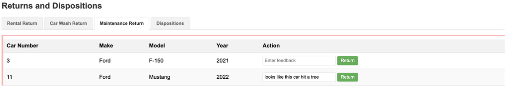

Step 05 - Using Remote Agents (A2A)
New Requirement: Distributing the Disposition Service
In Step 4, you implemented a complete disposition system using the Supervisor Pattern with local agents. The system works well, but the Miles of Smiles management team has a new architectural requirement:
The disposition decision-making logic needs to be maintained by a separate team and run as an independent service.
This is a common real-world scenario where:
- Different teams own different capabilities: The disposition team has specialized expertise and wants to maintain their own service
- The service needs to be reusable: Multiple client applications (not just car management) might need disposition recommendations
- Independent scaling is required: The disposition service might need different resources than the main application
You’ll learn how to convert Step 4’s local DispositionAgent into a remote service using the Agent-to-Agent (A2A) protocol.
What You’ll Learn
In this step, you will:
- Understand the Agent-to-Agent (A2A) protocol for distributed agent communication
- Convert Step 4’s local
DispositionAgentinto a remote A2A service - Build a client agent that connects to remote A2A agents using
@A2AClientAgent - Create an A2A server that exposes an AI agent as a remote service
- Learn about AgentCard, AgentExecutor, and TaskUpdater components from the A2A SDK
- Understand the difference between Tasks and Messages in A2A protocol
- Run multiple Quarkus applications that communicate via A2A
- See the architectural trade-offs: lose Supervisor Pattern sophistication, gain distribution benefits
Note
At the moment the A2A integration is quite low-level and requires some boilerplate code. The Quarkus LangChain4j team is working on higher-level abstractions to simplify A2A usage in future releases.
Understanding the A2A Protocol
The Agent-to-Agent (A2A) protocol is an open protocol for AI agents to communicate across different systems and platforms.
Why A2A?
- Separation of concerns: Different teams can develop specialized agents independently
- Scalability: Distribute agent workload across multiple systems
- Reusability: One agent can serve multiple client applications
- Technology independence: Agents can be implemented in different languages/frameworks
A2A Architecture
graph LR
subgraph "Quarkus Runtime 1: Car Management System"
W[CarProcessingWorkflow]
DA["DispositionAgent<br/>@A2AClientAgent"]
W --> DA
end
subgraph "A2A Protocol Layer"
AP[JSON-RPC over HTTP]
end
subgraph "Quarkus Runtime 2: Disposition Service"
AC[AgentCard<br/>Agent Metadata]
AE[AgentExecutor<br/>Request Handler]
AI[DispositionAgent<br/>AI Service]
T[DispositionTool]
AC -.describes.-> AI
AE --> AI
AI --> T
end
DA -->|A2A Request| AP
AP -->|A2A Response| DA
AP <-->|JSON-RPC| AE
The Flow:
- Client agent (
DispositionAgentwith@A2AClientAgent) sends a request to the remote agent - A2A Protocol Layer (JSON-RPC) transports the request over HTTP
- AgentCard describes the remote agent’s capabilities (skills, inputs, outputs)
- AgentExecutor receives the request and orchestrates the execution
- Remote AI agent (
DispositionAgentAI service) processes the request using tools - Response flows back through the same path
Additional A2A Info
For more information about the A2A protocol and the actors involved, see the A2A documentation.
Understanding Tasks vs. Messages
The A2A protocol distinguishes between two types of interactions:
| Concept | Description | Use Case |
|---|---|---|
| Task | A long-running job with a defined goal and tracked state | “Determine if this car should be scrapped” |
| Message | A single conversational exchange with no tracked state | Chat messages, quick questions |
In this step, we’ll use Tasks because car disposition analysis is a discrete job with a clear objective.
Task Lifecycle:
sequenceDiagram
participant Client as Client Agent
participant Server as A2A Server
participant Executor as AgentExecutor
participant AI as AI Agent
Client->>Server: Create Task (POST /tasks)
Server->>Executor: Initialize TaskUpdater
Executor->>AI: Execute with input
AI->>AI: Process and use tools
AI->>Executor: Return result
Executor->>Server: Update task status
Server->>Client: Task resultWhat Are We Going to Build?

We’ll convert Step 4’s architecture to use remote agents:
- Keep DispositionFeedbackAgent: Still analyzes if a car should be disposed (same as Step 4)
- Convert DispositionAgent to A2A Client: Changes from local agent to remote A2A client
- Create Remote A2A Server: A separate Quarkus application exposing the disposition service
The Complete Architecture:
graph TD
subgraph "Main Application (localhost:8080)"
R[Rental/Cleaning/Maintenance Returns]
FW[FeedbackWorkflow<br/>Parallel]
DFA[DispositionFeedbackAgent]
FSA[FleetSupervisorAgent<br/>Supervisor]
PA[PricingAgent]
DAC["DispositionAgent<br/>@A2AClientAgent"]
R --> FW
FW --> DFA
DFA --> FSA
FSA --> PA
PA --> DAC
end
subgraph "Remote Disposition Service (localhost:8888)"
AC[AgentCard]
AE[AgentExecutor]
DAI[DispositionAgent<br/>AI Service]
DT[DispositionTool]
AE --> DAI
DAI --> DT
end
DAC -->|A2A Protocol| AE
Prerequisites
Before starting:
- Completed Step 04 - This step directly builds on Step 4’s architecture
- Application from Step 04 is stopped (Ctrl+C)
- Ports 8080 and 8888 are available (you’ll run two applications simultaneously)
- Understanding of Step 4’s Supervisor Pattern (we keep the same pattern, just make DispositionAgent remote)
Understanding the Project Structure
The Step 05 code includes two separate Quarkus applications:
section-2/step-05/
├── multi-agent-system/ # Main car management application (port 8080)
│ ├── src/main/java/com/carmanagement/
│ │ ├── agentic/
│ │ │ ├── agents/
│ │ │ │ ├── DispositionAgent.java # A2A client agent
│ │ │ │ └── DispositionFeedbackAgent.java # Analyzes disposal needs
│ │ │ └── workflow/
│ │ │ ├── FeedbackWorkflow.java # Parallel analysis
│ │ │ └── CarProcessingWorkflow.java # Main orchestrator
│ └── pom.xml
│
└── remote-a2a-agent/ # Remote disposition service (port 8888)
├── src/main/java/com/demo/
│ ├── DispositionAgentCard.java # Describes agent capabilities
│ ├── DispositionAgentExecutor.java # Handles A2A requests
│ ├── DispositionAgent.java # AI service
│ └── DispositionTool.java # Tool for scrap/sell/donate
└── pom.xml
Why Two Applications?
- Simulates a real-world scenario where different teams maintain different agents
- The disposition service could be reused by multiple client applications
- Demonstrates cross-application agent communication via A2A
Warning: this chapter involves many steps
In order to build out the solution, you will need to go through quite a few steps. While it is entirely possible to make the code changes manually (or via copy/paste), we recommend starting fresh from Step 05 with the changes already applied. You will then be able to walk through this chapter and focus on the examples and suggested experiments at the end of this chapter.
Navigate to the complete section-2/step-05/multi-agent-system directory:
If you want to continue building on your previous code, place yourself at the root of your project and copy the updated files:
cp ../step-05/multi-agent-system/pom.xml ./pom.xml
cp ../step-05/multi-agent-system/src/main/java/com/carmanagement/model/CarInfo.java ./src/main/java/com/carmanagement/model/CarInfo.java
cp ../step-05/multi-agent-system/src/main/java/com/carmanagement/model/CarStatus.java ./src/main/java/com/carmanagement/model/CarStatus.java
cp ../step-05/multi-agent-system/src/main/resources/META-INF/resources/css/styles.css ./src/main/resources/META-INF/resources/css/styles.css
cp ../step-05/multi-agent-system/src/main/resources/META-INF/resources/js/app.js ./src/main/resources/META-INF/resources/js/app.js
cp ../step-05/multi-agent-system/src/main/resources/META-INF/resources/index.html ./src/main/resources/META-INF/resources/index.html
cp ../step-05/multi-agent-system/src/main/resources/import.sql ./src/main/resources/import.sql
copy ..\step-05\multi-agent-system\pom.xml .\pom.xml
copy ..\step-05\multi-agent-system\src\main\java\com\carmanagement\model\CarInfo.java .\src\main\java\com\carmanagement\model\CarInfo.java
copy ..\step-05\multi-agent-system\src\main\java\com\carmanagement\model\CarStatus.java .\src\main\java\com\carmanagement\model\CarStatus.java
copy ..\step-05\multi-agent-system\src\main\resources\META-INF\resources\css\styles.css .\src\main\resources\META-INF\resources\css\styles.css
copy ..\step-05\multi-agent-system\src\main\resources\META-INF\resources\js\app.js .\src\main\resources\META-INF\resources\js\app.js
copy ..\step-05\multi-agent-system\src\main\resources\META-INF\resources\index.html .\src\main\resources\META-INF\resources\index.html
copy ..\step-05\multi-agent-system\src\main\resources\import.sql .\src\main\resources\import.sql
Part 1: Convert DispositionAgent to A2A Client
The only change needed in the main application is converting the DispositionAgent from a local agent to an A2A client agent.
Step 1: Update the DispositionAgent to A2A Client
This is the key change from Step 4! Instead of a local agent with full system messages and logic, we now have a simple client that delegates to a remote service.
Step 4 Version (Local):
- Had detailed
@SystemMessagewith disposition criteria - Made decisions locally using AI
Step 5 Version (A2A Client):
- Uses
@A2AClientAgentto connect to remote service - Delegates all decision-making to the remote service
In src/main/java/com/carmanagement/agentic/agents, update DispositionAgent.java:
package com.carmanagement.agentic.agents;
import dev.langchain4j.agentic.Agent;
import dev.langchain4j.agentic.declarative.A2AClientAgent;
import dev.langchain4j.service.SystemMessage;
import dev.langchain4j.service.UserMessage;
/**
* Agent that determines how to dispose of a car.
*/
public interface DispositionAgent {
@SystemMessage("""
You are a car disposition specialist for a car rental company.
Your job is to determine the best disposition action based on the car's value, condition, age, and damage.
Disposition Options:
- SCRAP: Car is beyond economical repair or has severe safety concerns
- SELL: Car has value but is aging out of the fleet or has moderate damage
- DONATE: Car has minimal value but could serve a charitable purpose
- KEEP: Car is worth keeping in the fleet
Decision Criteria:
- If estimated repair cost > 50% of car value: Consider SCRAP or SELL
- If car is over 5 years old with significant damage: SCRAP
- If car is 3-5 years old in fair condition: SELL
- If car has low value (<$5,000) but functional: DONATE
- If car is valuable and damage is minor: KEEP
Provide your recommendation with a clear explanation of the reasoning.
""")
@UserMessage("""
Determine the disposition for this vehicle:
- Make: {carMake}
- Model: {carModel}
- Year: {carYear}
- Car Number: {carNumber}
- Current Condition: {carCondition}
- Estimated Value: {carValue}
- Damage/Feedback: {rentalFeedback}
Provide your disposition recommendation (SCRAP/SELL/DONATE/KEEP) and explanation.
""")
@Agent(outputKey = "dispositionAction", description = "Car disposition specialist. Determines how to dispose of a car based on value and condition.")
@A2AClientAgent(a2aServerUrl = "http://localhost:8888", outputKey = "dispositionAction")
String processDisposition(
String carMake,
String carModel,
Integer carYear,
Long carNumber,
String carCondition,
String carValue,
String rentalFeedback);
}
Let’s break it down:
@A2AClientAgent Annotation
This annotation transforms the method into an A2A client:
a2aServerUrl: The URL of the remote A2A server
The Method Signature
String processDisposition(
String carMake,
String carModel,
Integer carYear,
Long carNumber,
String carCondition,
String carValue,
String rentalFeedback
)
These parameters are sent to the remote agent as task inputs. The parameters match exactly what the remote DispositionAgent expects (same as Step 4’s local version).
Important: The carValue parameter comes from the PricingAgent that the supervisor invokes first, and rentalFeedback provides context about the damage.
How It Works
-
When this method is called, Quarkus LangChain4j:
- Creates an A2A Task with the method parameters as inputs
- Sends the task to the remote server via JSON-RPC
- Waits for the remote agent to complete the task
- Returns the result as a String
-
No manual HTTP requests needed
- Type-safe: compile-time checking of parameters
- Automatic error handling and retries
Part 2: Build the Remote A2A Server
Now let’s build the remote disposition service that will handle A2A requests from the main application.
Navigate to the remote-a2a-agent directory:
Step 2: Create the DispositionTool
The tool that executes disposition actions (scrap, sell, donate).
In src/main/java/com/demo, create DispositionTool.java:
package com.demo;
import dev.langchain4j.agent.tool.Tool;
import jakarta.inject.Singleton;
/**
* Tool for requesting car disposition operations.
* This tool is used by the LLM to determine the appropriate disposition for a car.
*/
@Singleton
public class DispositionTool {
/**
* Enum representing the possible disposition options for a car.
*/
public enum DispositionOption {
SCRAP("Scrap the car"),
SELL("Sell the car"),
DONATE("Donate the car");
private final String description;
DispositionOption(String description) {
this.description = description;
}
public String getDescription() {
return description;
}
}
/**
* Requests disposition for a car based on the provided parameters.
*
* @param carNumber The car number
* @param carMake The car make
* @param carModel The car model
* @param carYear The car year
* @param dispositionOption The disposition option (SCRAP, SELL, or DONATE)
* @param carCondition The condition of the car
* @return A summary of the disposition request
*/
@Tool(name = "DispositionTool")
public String requestDisposition(
Long carNumber,
String carMake,
String carModel,
Integer carYear,
DispositionOption dispositionOption,
String carCondition) {
// In a real implementation, this would make an API call to a disposition service
// or update a database with the disposition request
String result = "Car disposition requested for " + carMake + " " +
carModel + " (" + carYear + "), Car #" +
carNumber + ": " +
dispositionOption.getDescription() +
"\n";
System.out.println("⛍ DispositionTool result: " + result);
return result;
}
}
Key Points:
- One method:
requestDisposition - @Tool annotation: Makes each method available to the AI agent
- Detailed descriptions: Help the AI agent choose the appropriate action
Step 3: Create the DispositionAgent (AI Service)
The AI agent that actually makes disposition decisions.
In src/main/java/com/demo, create DispositionAgent.java:
package com.demo;
import dev.langchain4j.service.SystemMessage;
import dev.langchain4j.service.UserMessage;
import io.quarkiverse.langchain4j.RegisterAiService;
import io.quarkiverse.langchain4j.ToolBox;
import jakarta.enterprise.context.ApplicationScoped;
/**
* Agent that determines how to dispose of a car based on value, condition, and damage.
*/
@RegisterAiService
@ApplicationScoped
public interface DispositionAgent {
@SystemMessage("""
You are a car disposition specialist for a car rental company.
Your job is to determine the best disposition action based on the car's value, condition, age, and damage.
Disposition Options:
- SCRAP: Car is beyond economical repair or has severe safety concerns
- SELL: Car has value but is aging out of the fleet or has moderate damage
- DONATE: Car has minimal value but could serve a charitable purpose
- KEEP: Car is worth keeping in the fleet
Decision Criteria:
- If estimated repair cost > 50% of car value: Consider SCRAP or SELL
- If car is over 5 years old with significant damage: SCRAP
- If car is 3-5 years old in fair condition: SELL
- If car has low value (<$5,000) but functional: DONATE
- If car is valuable and damage is minor: KEEP
Provide your recommendation with a clear explanation of the reasoning.
""")
@UserMessage("""
Determine the disposition for this vehicle:
- Make: {carMake}
- Model: {carModel}
- Year: {carYear}
- Car Number: {carNumber}
- Current Condition: {carCondition}
- Estimated Value: {carValue}
- Damage/Feedback: {rentalFeedback}
Provide your disposition recommendation (SCRAP/SELL/DONATE/KEEP) and explanation.
""")
@ToolBox(DispositionTool.class)
String processDisposition(
String carMake,
String carModel,
Integer carYear,
Long carNumber,
String carCondition,
String carValue,
String rentalFeedback);
}
Key Points:
@RegisterAiService: Registers this as an AI service (not an agentic agent)@ToolBox(DispositionTool.class): Has access to the DispositionTool- System message: Identical to step-04’s local DispositionAgent - defines decision criteria for SCRAP/SELL/DONATE/KEEP
- Parameters: Same as step-04 - includes carValue (from PricingAgent) and rentalFeedback
- Decision logic: Identical to step-04 - considers value, age, condition, and damage
AI Service vs. Agentic Agent
Notice this is a traditional AI service (from Section 1), not an agentic workflow. The A2A server can expose both types.
Step 4: Create the AgentCard
The AgentCard describes the agent’s capabilities, skills, and interface.
In src/main/java/com/demo, create DispositionAgentCard.java:
package com.demo;
import java.util.List;
import jakarta.enterprise.context.ApplicationScoped;
import jakarta.enterprise.inject.Produces;
import io.a2a.server.PublicAgentCard;
import io.a2a.spec.AgentCapabilities;
import io.a2a.spec.AgentCard;
import io.a2a.spec.AgentInterface;
import io.a2a.spec.AgentSkill;
import io.a2a.spec.TransportProtocol;
@ApplicationScoped
public class DispositionAgentCard {
@Produces
@PublicAgentCard
public AgentCard agentCard() {
return new AgentCard.Builder()
.name("Disposition Agent")
.description("Determines how a car should be disposed of based on the car condition and disposition request.")
.url("http://localhost:8888/")
.version("1.0.0")
.protocolVersion("1.0.0")
.capabilities(new AgentCapabilities.Builder()
.streaming(true)
.pushNotifications(false)
.stateTransitionHistory(false)
.build())
.defaultInputModes(List.of("text"))
.defaultOutputModes(List.of("text"))
.skills(List.of(new AgentSkill.Builder()
.id("disposition")
.name("Car disposition")
.description("Makes a request to dispose of a car (SCRAP, SELL, or DONATE)")
.tags(List.of("disposition"))
.build()))
.preferredTransport(TransportProtocol.JSONRPC.asString())
.additionalInterfaces(List.of(
new AgentInterface(TransportProtocol.JSONRPC.asString(), "http://localhost:8888/")))
.build();
}
}
Let’s break it down:
@PublicAgentCard Annotation
This makes the AgentCard available at the /card endpoint.
Clients can query this endpoint to discover the agent’s capabilities.
AgentCard Components
Basic Information:
.name("Disposition Agent")
.description("Determines how a car should be disposed of based on the car condition and disposition request.")
.url("http://localhost:8888/")
.version("1.0.0")
Capabilities:
.capabilities(new AgentCapabilities.Builder()
.streaming(true)
.pushNotifications(false)
.stateTransitionHistory(false)
.build())
Skills:
.skills(List.of(new AgentSkill.Builder()
.id("disposition")
.name("Car disposition")
.description("Makes a request to dispose of a car (SCRAP, SELL, or DONATE)")
.tags(List.of("disposition"))
.build()))
Skills describe what the agent can do. This helps clients discover appropriate agents for their needs.
Transport Protocol:
.preferredTransport(TransportProtocol.JSONRPC.asString())
.additionalInterfaces(List.of(
new AgentInterface(TransportProtocol.JSONRPC.asString(), "http://localhost:8888")))
Specifies that this agent communicates via JSON-RPC over HTTP.
Step 5: Create the AgentExecutor
The AgentExecutor handles incoming A2A requests and orchestrates the AI agent.
In src/main/java/com/demo, create DispositionAgentExecutor.java:
package com.demo;
import jakarta.enterprise.context.ApplicationScoped;
import jakarta.enterprise.inject.Produces;
import jakarta.inject.Inject;
import io.a2a.server.agentexecution.AgentExecutor;
import io.a2a.server.agentexecution.RequestContext;
import io.a2a.server.events.EventQueue;
import io.a2a.server.tasks.TaskUpdater;
import java.util.ArrayList;
import java.util.List;
import io.a2a.spec.JSONRPCError;
import io.a2a.spec.Message;
import io.a2a.spec.Part;
import io.a2a.spec.TextPart;
import io.a2a.spec.UnsupportedOperationError;
/**
* Executor for the DispositionAgent.
* Handles the integration between the A2A framework and the DispositionAgent.
*/
@ApplicationScoped
public class DispositionAgentExecutor {
@Inject
DispositionAgent dispositionAgent;
@Inject
DispositionTool dispositionTool;
@Produces
public AgentExecutor agentExecutor(DispositionAgent dispositionAgent) {
return new AgentExecutor() {
@Override
public void execute(RequestContext context, EventQueue eventQueue) throws JSONRPCError {
System.out.println("🚗 ========================================");
System.out.println("🚗 REMOTE A2A DISPOSITION AGENT CALLED!");
System.out.println("🚗 ========================================");
TaskUpdater updater = new TaskUpdater(context, eventQueue);
if (context.getTask() == null) {
updater.submit();
}
updater.startWork();
List<String> inputs = new ArrayList<>();
// Process the request message
Message message = context.getMessage();
System.out.println("📨 Processing message with " + (message.getParts() != null ? message.getParts().size() : 0) + " parts");
if (message.getParts() != null) {
for (Part<?> part : message.getParts()) {
if (part instanceof TextPart textPart) {
System.out.println("💬 Text part: " + textPart.getText());
inputs.add(textPart.getText());
}
}
}
System.out.println("📋 Calling DispositionAgent with " + inputs.size() + " parameters:");
System.out.println(" - carMake: " + inputs.get(0));
System.out.println(" - carModel: " + inputs.get(1));
System.out.println(" - carYear: " + inputs.get(2));
System.out.println(" - carNumber: " + inputs.get(3));
System.out.println(" - carCondition: " + inputs.get(4));
System.out.println(" - carValue: " + inputs.get(5));
System.out.println(" - rentalFeedback: " + inputs.get(6));
// Call the agent with all parameters
String agentResponse = dispositionAgent.processDisposition(
inputs.get(0), // carMake
inputs.get(1), // carModel
Integer.parseInt(inputs.get(2)), // carYear
Long.parseLong(inputs.get(3)), // carNumber
inputs.get(4), // carCondition
inputs.get(5), // carValue
inputs.get(6)); // rentalFeedback
System.out.println("✅ DispositionAgent response: " + agentResponse);
System.out.println("🚗 ========================================");
// Return the result
TextPart responsePart = new TextPart(agentResponse, null);
List<Part<?>> parts = List.of(responsePart);
updater.addArtifact(parts, null, null, null);
updater.complete();
}
@Override
public void cancel(RequestContext context, EventQueue eventQueue) throws JSONRPCError {
throw new UnsupportedOperationError();
}
};
}
}
Let’s break it down:
CDI Bean with AgentExecutor Factory
@ApplicationScoped
public class DispositionAgentExecutor {
@Produces
public AgentExecutor agentExecutor(DispositionAgent dispositionAgent)
Produces an AgentExecutor bean that Quarkus LangChain4j will use to handle A2A task requests.
Task Processing
public void execute(RequestContext context, EventQueue eventQueue) {
TaskUpdater updater = new TaskUpdater(context, eventQueue);
if (context.getTask() == null) {
updater.submit();
}
updater.startWork();
List<String> inputs = new ArrayList<>();
// Process the request message
Message message = context.getMessage();
if (message.getParts() != null) {
for (Part<?> part : message.getParts()) {
if (part instanceof TextPart textPart) {
inputs.add(textPart.getText());
}
}
}
The RequestContext contains the incoming message with all input parameters sent by the client as text parts.
Extract Parameters
String agentResponse = dispositionAgent.processDisposition(
inputs.get(0), // carMake
inputs.get(1), // carModel
Integer.parseInt(inputs.get(2)), // carYear
Long.parseLong(inputs.get(3)), // carNumber
inputs.get(4), // carCondition
inputs.get(5), // carValue (from PricingAgent)
inputs.get(6)); // rentalFeedback
Extracts each parameter by index from the message parts. The order and parameters match step-04’s local DispositionAgent exactly.
Return the Result
TextPart responsePart = new TextPart(agentResponse, null);
List<Part<?>> parts = List.of(responsePart);
updater.addArtifact(parts, null, null, null);
updater.complete();
Creates a text part with the agent’s response and sends it back to the client via the TaskUpdater. This completes the A2A task.
Cancel Handler
@Override
public void cancel(RequestContext context, EventQueue eventQueue) throws JSONRPCError {
throw new UnsupportedOperationError();
}
The cancel method is required by the interface but not implemented for this simple agent.
Try It Out
You’ll need to run two applications simultaneously.
Terminal 1: Start the Remote A2A Server
Wait for:
The disposition service is now running and ready to accept A2A requests!
Terminal 2: Start the Main Application
Open a new terminal and run:
Wait for:
Test the Complete Flow
Open your browser to http://localhost:8080.
You’ll see the same UI as Step 4 with the Returns and Dispositions section and the Dispositions tab (introduced in Step 4).

On the Maintenance Return tab, enter feedback indicating severe damage for the Ford F-150:
Click Return.
What happens?
-
Parallel Analysis (FeedbackWorkflow):
DispositionFeedbackAgent: “Disposition required — severe damage”MaintenanceFeedbackAgent: “Major repairs needed”CleaningFeedbackAgent: “Not applicable”
-
Supervisor Orchestration (FleetSupervisorAgent):
- Analyzes feedback and determines disposition is required
- Invokes PricingAgent to estimate vehicle value
- Invokes DispositionAgent (remote via A2A)
- → Executes
DispositionAgent(A2A client)
-
A2A Communication:
- Client sends task to
http://localhost:8888 AgentExecutorreceives and processes taskDispositionAgent(AI service) analyzes usingDispositionTool- Result flows back to client
- Client sends task to
-
UI Update:
- Car status →
DISPOSED - Car appears in the Dispositions tab
- Car status →
Check the Logs
Terminal 1 (Remote A2A Server):
Terminal 2 (Main Application):
[DispositionFeedbackAgent] DISPOSITION_REQUIRED - Severe structural damage, uneconomical to repair
[FleetSupervisorAgent] Invoking PricingAgent for value estimation
[PricingAgent] Estimated Value: $12,500
[FleetSupervisorAgent] Invoking DispositionAgent
[DispositionAgent @A2AClientAgent] Sending task to http://localhost:8888
[DispositionAgent @A2AClientAgent] Received result: Car should be scrapped...
Notice the cross-application communication via A2A!
How It All Works Together
Let’s trace the complete flow:
sequenceDiagram
participant User
participant Service as CarManagementService
participant Workflow as CarProcessingWorkflow
participant FeedbackWF as FeedbackWorkflow
participant Supervisor as FleetSupervisorAgent
participant Pricing as PricingAgent
participant Client as DispositionAgent<br/>@A2AClientAgent
participant A2A as A2A Protocol<br/>(JSON-RPC)
participant Executor as AgentExecutor
participant Remote as DispositionAgent<br/>AI Service
participant Tool as DispositionTool
User->>Service: Return car with severe damage
Service->>Workflow: processCarReturn(...)
rect rgb(255, 243, 205)
Note over Workflow,FeedbackWF: Parallel Analysis
Workflow->>FeedbackWF: Execute
par Concurrent Execution
FeedbackWF->>FeedbackWF: CleaningFeedbackAgent
and
FeedbackWF->>FeedbackWF: MaintenanceFeedbackAgent
and
FeedbackWF->>FeedbackWF: DispositionFeedbackAgent<br/>Result: "DISPOSITION_REQUIRED"
end
end
rect rgb(248, 215, 218)
Note over Workflow,ActionWF: Conditional Routing
Workflow->>ActionWF: Execute
ActionWF->>ActionWF: Check: dispositionRequest required? YES
ActionWF->>Client: Execute DispositionAgent
end
rect rgb(212, 237, 218)
Note over Client,Tool: A2A Communication
Client->>A2A: Create Task with inputs
A2A->>Executor: POST /tasks
Executor->>Remote: processDisposition(...)
Remote->>Tool: scrapCar() / sellCar() / donateCar()
Tool->>Tool: Execute disposal action
Tool->>Remote: Return result
Remote->>Executor: Return recommendation
Executor->>A2A: Update task status
A2A->>Client: Return result
end
Client->>Workflow: Return disposition result
Workflow->>Service: Return CarConditions
Service->>Service: Set status to DISPOSED
Service->>User: Update UIUnderstanding the A2A Implementation
Client Side (@A2AClientAgent)
The client agent is remarkably simple:
Quarkus LangChain4j handles:
- Creating the A2A task
- Serializing method parameters as task inputs
- Sending the HTTP request via JSON-RPC
- Waiting for the response
- Deserializing the result
- Error handling and retries
Server Side (AgentCard + AgentExecutor)
The server requires more components:
| Component | Purpose |
|---|---|
| AgentCard | Describes agent capabilities, published at /card endpoint |
| AgentExecutor | Receives and processes A2A task requests |
| TaskUpdater | Updates task status and sends results back to client |
| AI Agent | The actual AI service that processes requests |
| Tools | Actions the AI agent can perform |
This separation allows: - Agents to focus on business logic - A2A infrastructure to handle protocol details - Multiple agents to be exposed from one server
Key Takeaways
- A2A enables distributed agents: Different teams can maintain specialized agents in separate systems
@A2AClientAgentis powerful: Simple annotation transforms a method into an A2A client- AgentCard describes capabilities: Clients can discover what remote agents can do
- AgentExecutor handles protocol: Separates A2A infrastructure from agent logic
- Tasks vs. Messages: A2A supports both task-based and conversational interactions
- Type-safe integration: Method parameters automatically become task inputs
- Remote agents integrate seamlessly: Works with existing workflows and agents
- Two runtimes communicate: Real-world simulation of distributed agent systems
- Architectural trade-offs: We traded Step 4’s sophisticated Supervisor Pattern for simpler Conditional routing to enable distribution
- Distribution benefits: The disposition service can now be maintained independently, scaled separately, and reused by other applications
Experiment Further
1. Add Agent Discovery
The AgentCard is published at http://localhost:8888/card. Try:
You’ll see the full agent description including skills, capabilities, and transport protocols.
2. Test Different Disposition Scenarios
Try these feedback examples:
Scenario 1: Sell the car
Scenario 2: Donate the car
Scenario 3: Scrap the car
Observe how the remote agent makes different decisions!
3. Create Your Own A2A Agent
What other specialized agents could be useful?
- Pricing Agent: Determines optimal rental pricing based on demand
- Route Planner Agent: Plans maintenance schedules for the fleet
- Insurance Agent: Assesses insurance claims for damaged cars
Try creating a simple A2A server for one of these!
4. Monitor A2A Communication
Add logging to see the JSON-RPC messages:
This shows the raw A2A protocol messages.
Troubleshooting
Connection refused to localhost:8888
Make sure the remote A2A server is running in Terminal 1. Check for:
If you see “Port already in use”, another application is using port 8888. You can change it in remote-a2a-agent/src/main/resources/application.properties:
Then update the client’s a2aServerUrl accordingly.
Task execution timeout
If the remote agent takes too long to respond, you might see a timeout error. The default timeout is sufficient for most cases, but you can increase it if needed by configuring the A2A client.
Parameter mismatch errors
If you see errors about missing parameters, verify that:
- Client agent method parameter names match what AgentExecutor extracts
- The
getTextPart()/getIntegerPart()calls use the correct keys - All required parameters are being sent by the client
Agent not activating
If the DispositionAgent never executes, check:
- The
@ActivationConditionmethod is correctly implemented - The
dispositionRequestcontains"DISPOSITION_REQUIRED" - The condition is being checked in the correct order
Both applications on same port
If you see “Port already in use” on 8080:
- Make sure you stopped the application from Step 04
- Only run the main application from
multi-agent-system, not from a previous step directory - Check for zombie Java processes:
ps aux | grep java
What’s Next?
You’ve successfully converted Step 4’s local disposition system into a distributed agent system using the A2A protocol!
You learned how to:
- Convert local agents to remote A2A services
- Connect to remote agents using
@A2AClientAgent - Build A2A servers with AgentCard and AgentExecutor
- Integrate remote agents into complex workflows
- Run multiple Quarkus applications that communicate via A2A
- Understand the architectural trade-offs between local and distributed agents
Key Progression: - Step 4: Sophisticated local orchestration with Supervisor Pattern - Step 5: Distributed architecture with A2A protocol
This completes Section 2: Agentic Systems! You’ve progressed from simple agents to complex distributed workflows with remote agent communication.
Congratulations! You now have the skills to build sophisticated multi-agent systems with Quarkus LangChain4j!